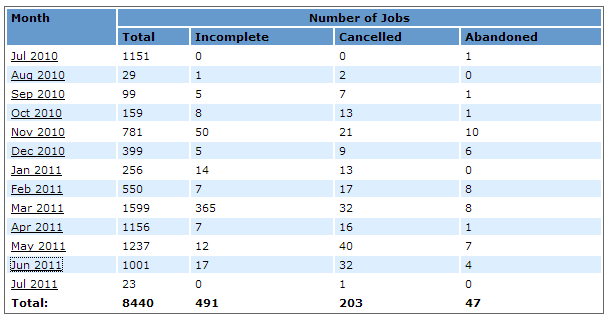
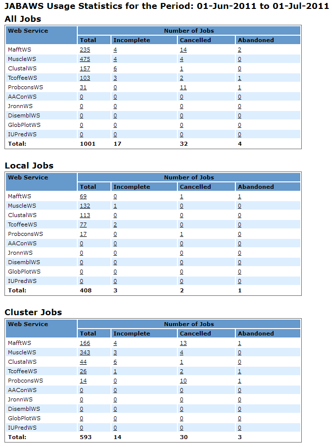
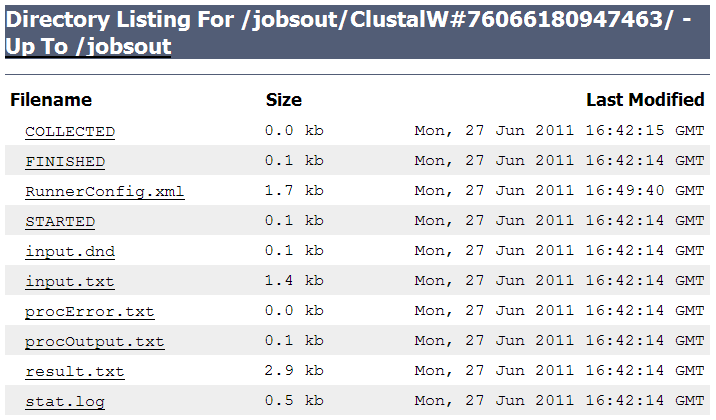

Usage Statistics¶
JABAWS comes with a web application for visualizing usage statistics. The screenshot below shows the main page of this application. The individual month is linked to detailed usage statistics (described later). Please note, that the links to the detailed monthly statistics are only available for authenticated users in the role admin. There is a link at the bottom of the page that lets you login, if you have not done so.
If you are using JABAWS VA (Virtual Appliance) then the username is jabaws and password is not defined, i.e. empty.
If you have deployed a JABAWS WAR file, then please see the configuring privileged access for Tomcat web application server section for further details.
{kind=link}
The table contains the number of jobs processed by JABAWS per month, for the whole period when the statistics was collected.
For each month the table contains the following information.
- Month - the period of time for which statistics is displayed. For example Jan 2011 means period of time from the first of January to the first of February
- Total - the total number of jobs accepted by JABAWS
- Incomplete - the number of jobs for which the result file was not found or was empty excluding cancelled
- Cancelled - the number of jobs cancelled by the user
- Abandoned - the number of jobs which result(s) were not collected
The summary for each column is displayed in the last row of the table.
Detailed View¶
Detailed execution statistics for each month is available for authenticated users only.
{kind=link}
Each table contains the number of jobs processed by JABAWS during the period of time specified in the title:
- The “All Jobs” table contains the summary of all jobs
- “Local Jobs” table - contains the summary of the jobs calculated by the local engine
- “Cluster Jobs” table - contains the summary of the jobs calculated by the cluster
Each table contains the following information for each web service:
- Total - the total number of jobs accepted by a particular JABA service
- Incomplete - the number of jobs for which the result file was not found or was empty excluding cancelled
- Cancelled - the number of jobs cancelled by the user
- Abandoned - the number of jobs which result(s) were not collected
Job List¶
Please note that if you deployed JABAWS WAR, in order to be able to navigate to the job directory from this view, the application server may need to be configured. Please see the Configuring JABAWS execution statistics section for further details.

Columns:
- JobID - the JABAWS job id, unique for every job
- Cluster JobID - cluster job id
- InputSize - input size in bytes
- ResultSize - result size in bytes
- Runtime (s) - job’s runtime in seconds
- Start time (s)- job’s start time and date
- Finish time (s)- job’s finish time and date
- isCancelled - whether the job was cancelled
- isCollected - whether the job was collected. False for the jobs that has been initiated but which results has never been retrieved
- isFinished - whether the job has finished. This does not necessarily mean that the job has produced the result. The job can sometime finish in failure
Job Directory Contents¶
{kind=link}
STARTED and FINISHED files contain Unix timestamp - when the job was started and completed respectively. STARTED is replaced by SUBMITTED if the job has been submitted to the cluster, as opposed to executed locally, on the server.
COLLECTED file is empty and indicates that the job results were collected by the user. Due to asynchronous nature of the job it is possible that the job was started and finished, but the results has never been requested.
RunnerConfig.xml file contains a complete description of the job and JABAWS can restart the job based on this description.
procError.txt and procOutput.txt files contains the content of the standard out and standard error streams of the process.
result.txt file contains the results.
input.txt file contains input into the process.
There are maybe other files depending on the nature of the job, but the one described above will be present in most cases. In this example, stat.log file stories the execution statistics generated by (clustal executable in this example) process.
If you have deployed JABAWS WAR file or made changes to JABAWS configuration you may need to make a few changes to the Tomcat configuration to be able to see the content of the job directory. Please see the Configuring JABAWS execution statistics section for further details.
Configuring JABAWS execution statistics¶
JABAWS execution statistics is a multi-component system. First is a crawler whose job is to collect and preprocess the statistics from the job temporary directories and record the collected statistics into the database. The second part of the system is a web application whose job is to visualise the statistics from the database.
It is possible to enable/disable the statistics collector by changing the following properties in the conf/Cluster.engine.properties and conf/Local.engine.properties files.
# Enable/disable cluster statistics collector true = enable, false = disable
cluster.stat.collector.enable=false
# Maximum amount of time the job is considered be running in hours. Optional defaults to 7 days (168h)
cluster.stat.maxruntime=24
# Enable/disable cluster statistics collector true = enable, false = disable
local.stat.collector.enable=true
# Maximum amount of time the job is considered to be running in hours. Optional defaults to 24 hours
local.stat.maxruntime=6
If the statistics collector is enabled then the crawler starts automatically soon after (10 minutes for local engine, and 60 minutes for cluster engine) the JABAWS web application and will be collecting the execution statistics every 24 hours after the start.
The details of the job are only available if the job temporary directory is located within a JABAWS web application. If not, the system administrator can create a symbolic link pointing to the temporary job directories outside of a web application and configure the application server to allow navigation to the links. For the Tomcat application server the context configuration file should be created and copied to the <TOMCAT_ROOT>/conf/Catalina/localhost directory. The name of the file should be the same as the web application context name, for example jabaws.xml for jabaws. Where the TOMCAT_ROOT is the location of the Tomcat web application server. Here is an example of such a file:
<?xml version="1.0" encoding="UTF-8"?>
<Context antiResourceLocking="false" privileged="true" allowLinking="true"/>
The key option here is this: allowLinking="true". Please also make sure that you have defined the user in role admin as described below.
Configuring a privileged access for Tomcat web application server¶
Access to configuration files, detailed job execution statistics and job directories are allowed only for authenticated users in role admin.
If you use Tomcat, then the simplest way to set up privileged access is to use a plain text configuration file conf/tomcat-user.xml. Here is an example of such configuration file defining user “peter” in role admin.
<tomcat-users>
<role rolename="admin"/>
<user username="peter" password="your password here " roles="admin"/>
</tomcat-users>
For more information on users and roles please consult Apache-Tomcat help pages.